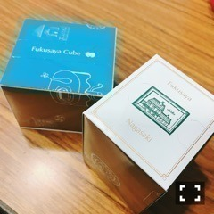
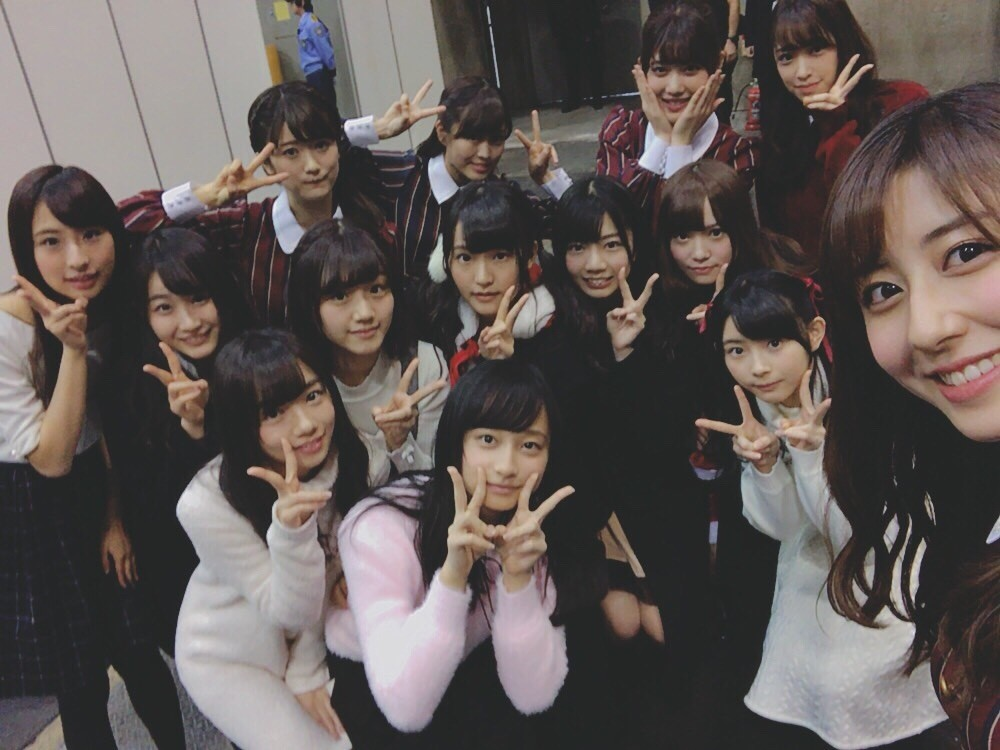
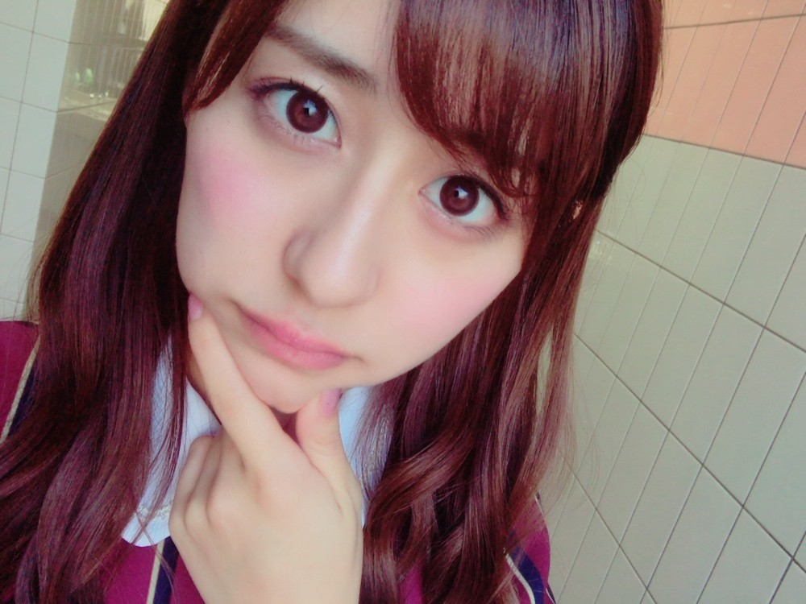

| 2016/12 17 Sat | 全握in名古屋。 |
ちはるーむへようこそ〜
名古屋での全国握手会、ミニライブ、
寒い中来てくれた皆さん
ありがとうございました！！
伊織との18レーン、
とっても楽しかった(﹡ˆ ˆ﹡)
思ってたよりも沢山の方が来てくれて
凄い安心しました...！
よかった...

今日は主に
・クリスマスライブ
・ブログ
・アメフト
・スポーツ
・夏派？冬派？
・学校
などについてお話ししました！
伊織とのペアだったのもあって、
アンダー単独公演に来てくれる方も多く
沢山感想を聞けたのが嬉しかったです！！
褒められて伸びるタイプ...(_ _).｡o♡
伊織のファンの方も優しかった◎
お話ししやすかったです！
ちはるーむめいとさんは安心感が♡
来てくれると嬉しさと楽しさが倍増します。
また明日ね！という方も多くて
2日続けて会えるのは幸せだな〜と
改めて感じました◎
でも良いお年を！という方もいらっしゃって
少し寂しい気持ちになりました。
時間が過ぎるのが早すぎる〜
寒い中長時間だったと思うので
今日はゆっくり休んでください\( ˆ ˆ )/
幸せな時間をありがとうございました！！
--------------------------------♡
◎Chihafood◎
同じく握手会で名古屋に来ていた
欅ちゃん達からの差し入れを
今日は紹介します！
福砂屋さんのカステラ、
フクサヤキューブ！

ふわふわのカステラに底のザラメ、
そしてこのキューブには
折りたたみピックも入っているので
このキューブ１つで
手軽に食べられるのも嬉しい♡
カステラが大好きで、
たまに家族でカステラの工場
まで行って買うほどなのです！
だからものすごい嬉しかった◎
でも最初カステラの紙を
少し食べそうになっちゃった( ´ｰ`)笑
皆さんは気をつけてね( ´ｰ`)笑
欅ちゃん達挨拶に来てれた時に
今日初めて会った、「ひらがなけやき」ちゃんと♪

さりげな〜く、ちまとかりんと純奈が
ひらがなちゃん達に混ざってる！笑
--------------------------------♡
♬ ChihaMusic
「君とつくる未来」ケツメイシさん
この曲、ケツメイシさんの曲の中で
一番好きかもしれない！
聞いていると元気も出てくるし
笑みもこぼれてくる。
"今 未来へ繋いでゆける全ては
大切な君と 出会えた意味
共に手を取り合って
たまにはぶつかり合って来たけど
君とつくる未来が楽しみで"
このサビの部分が大好き。
ずっと聞いていたい心地良さがある。
そして口ずさみたくなる。

ぷに。
明日は個別握手会！
今年最後に会える機会なので
楽しみにしています〜◎
何着るのかは大体想像ついてるとは思うけど...
楽しみにしていてね！！
おやすみ〜
斎藤ちはる
コメント(206)
2016/12/17 23:42